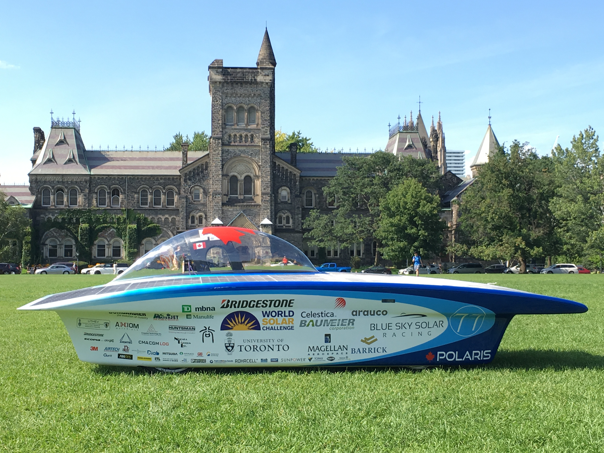

During the summer of 2017, I was a part of the Blue Sky Solar Power Vehicle Team, where a solar powered car named Polaris was designed and built to participate in the Bridgestone World Solar Challenge. The team ultimately finished 11th place overall.
I participated in the fabrication of electrical and mechanical parts, including the main cover of the vehicle consisting of the solar panels, and the battery packages.
